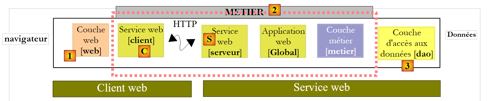
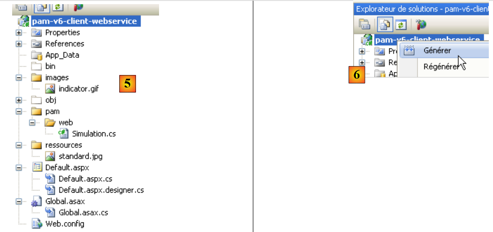
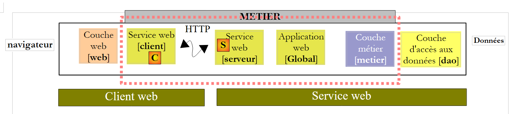

10. De applicatie [SimuPaie] – versie 6 – client ASP.NET van een webservice
10.1. De architectuur van de applicatie
We passen de client/server-architectuur van de test NUnit als volgt aan:
 |
In [1] wordt de test NUnit vervangen door de webapplicatie van versie 8. Hierbij moet worden opgemerkt dat deze architectuur twee niet-weergegeven webservers omvat:
- een webserver waarop de webservice [S] draait. Deze draait in een eerste instantie van Visual Web Developer.
- een webserver waarop de webclient [1] draait. Deze draait in een tweede instantie van Visual Web Developer.
10.2. Het Visual Web Developer-project van de client [web]
We maken een nieuw webproject ASP.NET aan:
 |
- in [1] kiezen we voor een webproject in C#
- in [2] kiezen we "Webtoepassing ASP.NET"
- in [3] geven we het webproject een naam
- In [4] geven we een locatie voor dit project aan
- in [5] is het project aangemaakt
We wijzigen enkele eigenschappen van het project:
 |
- in [1], de naam van de assembly die zal worden gegenereerd
- in [2], de standaardnaamruimte voor de klassen en interfaces die zullen worden aangemaakt
Om het project [pam-v6-client-webservice] te bouwen, kunnen we de bestanden [Global.asax] en [Default.aspx] uit het webproject [pam-v4-3tier-nhibernate-multivues-monopage] ophalen en deze naar het project [pam-v6-client-webservice] kopiëren. Dit doe je eerst met Windows Verkenner:
 |
- naar [1], de projectmap van [pam-v4-3tier-nhibernate-multivues-monopage]
- naar [2], de map van het project [pam-v6-client-webservice] na het kopiëren
- van de mappen [images, pam, ressources]
- van de bestanden [Global.asax, Global.asax.cs]
- de bestanden [Default.aspx, Default.aspx.cs, Default.aspx.designer.cs]
- in [3], in Visual Studio Express worden alle bestanden van het project weergegeven, zodat de nieuw toegevoegde bestanden zichtbaar worden
- in [4] voeg je de toegevoegde mappen en bestanden toe aan het project
 |
- in [5] het nieuwe project [pam-v6-client-webservice]
In dit stadium kan het project een eerste keer worden gegenereerd: [6]. De volgende fouten worden weergegeven:
Om deze fouten te begrijpen en te verhelpen, moeten we teruggaan naar de architectuur van het webproject dat in ontwikkeling is:
 |
Het project [pam-v6-client-webservice] is de laag [web] [1] in het bovenstaande schema. We zien dat deze laag communiceert met de webdienstclient [C], een client die we binnenkort gaan genereren.
- De fouten 2, 5 en 7 zijn te wijten aan het feit dat de code van [pam-v4] verwees naar DLL van de laag [metier], DLL, die zich nu aan de serverzijde bevindt en niet aan de clientzijde.
- Fouten 1 en 3 hebben dezelfde oorzaak, maar ditmaal betreft het de DLL van de laag [dao]
- fout 4 komt doordat de code van [Global.asax] gebruikmaakt van Spring en ons project geen verwijzing bevat naar de DLL van Spring. We gaan deze verwijzing toevoegen.
- Fout 6 komt doordat de klasse [Employe] is gedefinieerd in de laag [dao], die aan de clientzijde niet bestaat.
De naamruimtefouten 1, 2, 4, 5, 6 en 7 worden opgelost door de C-client van de webservice te genereren. Fout 3 wordt opgelost door aan het project een verwijzing naar de Spring-klasse DLL toe te voegen. We kunnen als volgt te werk gaan:
 |
- in [1] voegen we een verwijzing toe naar het project [pam-v6-client-webservice]
- in [4] is een verwijzing toegevoegd naar DLL en [Spring.Core] uit de map [lib].
Na het toevoegen van deze verwijzing in Spring vertoont het genereren van het project één fout minder. Alle andere fouten zijn te wijten aan coderegels die verwijzen naar objecten uit de lagen [metier] en [dao], die zich nu op de server bevinden. We zullen zien dat deze ontbrekende objecten worden gegenereerd in de client [C] van de webservice.
 |
Voordat we de webserviceclient [C] genereren, gaan we de naamruimte van de verschillende aanwezige klassen wijzigen. Deze bevinden zich momenteel in de naamruimte [pam-v4]. We wijzigen deze naamruimte in [pam-v6]. Het gaat om de volgende bestanden: Default.aspx.cs, Default.aspx.designer.cs, Global.asax.cs. Bijvoorbeeld:
....
namespace pam_v6
{
public class Global : System.Web.HttpApplication
{
// --- statische gegevens van de applicatie ---
public static Employe[] Employes;
public static IPamMetier PamMetier = null;
....
Op regel 2 is de naamruimte pam_v4 vervangen door de naamruimte pam_v6.
Bovendien moet de opmaak van de bestanden Default.aspx en Global.asax worden aangepast:
 |
De opmaak van [Default.aspx] wordt:
<%@ Page Language="C#" AutoEventWireup="true" CodeFile="Default.aspx.cs" Inherits="pam_v6.PagePam" %>
<!DOCTYPE html PUBLIC "-//W3C//DTD XHTML 1.0 Transitional//EN" "http://www.w3.org/TR/xhtml1/DTD/xhtml1-transitional.dtd">
.....
Regel 1: het attribuut Inherits verwijst naar de klassenaam van het bestand [Default.aspx.cs]. We wijzigen de naamruimte.
De markup van [Global.asax] wordt:
<%@ Application Codebehind="Global.asax.cs" Inherits="pam_v6.Global" Language="C#" %>
Hierboven wordt de naamruimte van het attribuut Inherits gewijzigd.
We genereren nu de client [C] van de webservice.
 |
Om de volgende bewerkingen uit te voeren, moet de webservice [S] [pam-v5-webservice] in een andere instantie van Visual Web Developer worden gestart.
 |
- In [1] voeg je aan het project [pam-v6-client-webservice] een verwijzing toe naar de webservice [pam-v5-webservice]
- in [2], de URI van de webservice [pam-v5-webservice]. Dit is de URL van het bestand WSDL van deze webservice. Bij het opzetten van de webservice [pam-v5-webservice] is aangegeven hoe je deze URL kunt achterhalen.
- In [3] wordt de wizard gevraagd het bestand WSDL te verwerken, dat is aangegeven in [2]
- In [4] worden de webdienst [Service1Soap] en de externe methoden die deze aanbiedt, zoals beschreven in [5], geïdentificeerd.
- in [6] wordt de naamruimte vastgelegd waarin de klassen en interfaces van de client [C] zullen worden gegenereerd
- de generatie van de client [C] wordt gestart
 |
- in [1], de gegenereerde client. Dubbelklik erop om toegang te krijgen tot de inhoud.
- In [2] worden in de objectverkenner de klassen en interfaces van de naamruimte pam_v6.WsPam weergegeven. Dit is de naamruimte van de gegenereerde client.
- in [3], de klasse die de webdienstclient implementeert.
- In [4] worden de methoden weergegeven die door de client [Service1SoapClient] worden geïmplementeerd. Hierin zijn de twee methoden van de externe webservice [5] en [6] opgenomen.
- In [2] zijn de afbeeldingen van de entiteiten van de lagen te vinden:
- [metier]: FeuilleSalaire, ElementsSalaire
- [dao]: Employe, Cotisations, Indemnites
Verder moet men in gedachten houden dat deze afbeeldingen van externe entiteiten zich aan de clientzijde bevinden en in de naamruimte pam_v6.WsPam.
Laten we eens kijken naar de methoden en eigenschappen die door een van deze afbeeldingen worden blootgesteld:
 |
- in [1] selecteren we de lokale klasse [Employe]
- in [2] vinden we de eigenschappen van de externe entiteit [Employe] terug, evenals privévelden die worden gebruikt voor de eigen behoeften van de lokale entiteit.
Laten we de code van [Global.asax.cs] bekijken, die fouten vertoont:
 |
- in de regels 3 en 4 worden naamruimten gebruikt die wel op de server bestaan, maar niet bij de client.
- regel 13 gebruikt een klasse [Employe] waarvan de juiste naamruimte niet is gedeclareerd
- regel 14 gebruikt een interface IPamMetier die bij de client onbekend is.
We zijn al eerder soortgelijke problemen tegengekomen in de eerder besproken C#-client.
In de architectuur:
 |
- wordt de lokale laag [metier] geïmplementeerd door de client [C] van het type pam_v6.WsPam.Service1SoapClient, die de interface IPamMetier niet implementeert, ook al bevat deze wel methoden met dezelfde namen.
- De bewerkte entiteiten (Employe, Indemnites, Cotisations) door de gegenereerde client [C] bevinden zich in de naamruimte pam_v6.WsPam
De code van [Global.asax.cs] ontwikkelt zich als volgt:
using System;
using System.Collections.Generic;
using Pam.Web;
using Spring.Context.Support;
using pam_v6.WsPam;
namespace pam_v6
{
public class Global : System.Web.HttpApplication
{
// --- statische gegevens van de applicatie ---
public static Employe[] Employes;
public static Service1SoapClient PamMetier = null;
public static string Msg;
public static bool Erreur = false;
// opstarten van de applicatie
public void Application_Start(object sender, EventArgs e)
{
// verwerking van het configuratiebestand
try
{
// instantiëring van de laag [metier]
PamMetier = ContextRegistry.GetContext().GetObject("pammetier") as Service1SoapClient;
// vereenvoudigde lijst van medewerkers
Employes = PamMetier.GetAllIdentitesEmployes();
// gelukt
Msg = "Base chargée...";
}
catch (Exception ex)
{
// de fout wordt genoteerd
Msg = string.Format("L'erreur suivante s'est produite lors de l'accès à la base de données : {0}", ex);
Erreur = true;
}
}
public void Session_Start(object sender, EventArgs e)
{
// er wordt een lege lijst met simulaties in de sessie geplaatst
List<Simulation> simulations = new List<Simulation>();
Session["simulations"] = simulations;
}
}
}
Op regel 24 wordt de laag [C] geïnstantieerd met behulp van Spring. De configuratie die nodig is voor deze instantiëring wordt uitgevoerd in [web.config]:
<configSections>
<sectionGroup name="system.web.extensions" type="System.Web.Configuration.SystemWebExtensionsSectionGroup, System.Web.Extensions, Version=3.5.0.0, Culture=neutral, PublicKeyToken=31BF3856AD364E35">
...
</sectionGroup>
<sectionGroup name="spring">
<section name="context" type="Spring.Context.Support.ContextHandler, Spring.Core" />
<section name="objects" type="Spring.Context.Support.DefaultSectionHandler, Spring.Core" />
</sectionGroup>
</configSections>
<spring>
<context>
<resource uri="config://spring/objects" />
</context>
<objects xmlns="http://www.springframework.net">
<object id="pammetier" type="pam_v6.WsPam.Service1SoapClient,pam-v6-client-webservice"/>
</objects>
</spring>
Op regel 16 is de laag [metier] een instantie van de klasse [pam_v6.WsPam.Service1SoapClient], die te vinden is in DLL [pam-v6-client-webservice]. Ter herinnering: we hebben het project [pam-v6-client-webservice] zo geconfigureerd dat het deze DLL genereert.
Er zitten nog enkele fouten in [Default.aspx.cs]:
 |  |
- regels 5, 6: deze naamruimten bestaan niet meer. De entiteiten bevinden zich nu in de naamruimte pam_v6 of pam_v6.WsPam.
- regel 98: de gegenereerde client [C] heeft de klasse [PamException] uit de laag [dao] niet overgenomen. Dit was ook niet mogelijk, aangezien de webservice deze uitzondering niet blootstelt. We kiezen ervoor om PamException te vervangen door de bovenliggende klasse Exception.
De code wordt dan:
...
using System.Web.UI.WebControls;
using pam_v6.WsPam;
namespace pam_v6
{
public partial class PagePam : Page
{
...
...
try
{
feuillesalaire = Global.PamMetier.GetSalaire(DropDownListEmployes.SelectedValue, HeuresTravaillées, JoursTravaillés);
}
catch (Exception ex)
{
...
Zodra deze fouten zijn verholpen, kunnen we de webapplicatie uitvoeren:
 |
- in [1], de URL van de webclient van de externe webservice
- in [2] is de medewerkerslijst ingevuld. De gegevens daarin zijn afkomstig van de webservice.
We nodigen de lezer uit om deze versie 6, een kopie van versie 4, te testen.